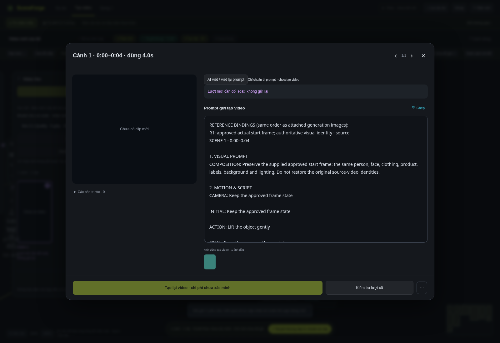

Sửa lỗi nút bị khóa sau khi bấm mở ô clip. Có dòng Veo v29 trên node để nhận biết giao diện mới.
↓ Tải cập nhật Windows · 3,8 MiBĐóng app, cập nhật, mở lại rồi bấm một ô clip. AI viết prompt nằm phía trên; tạo video và kiểm tra lượt cũ ở chân cửa sổ.

Ảnh fixture; đã kiểm thử gói đóng sẵn bằng Chromium. Chưa kiểm thử Windows hoặc xác minh hết lỗi Google từ chối.